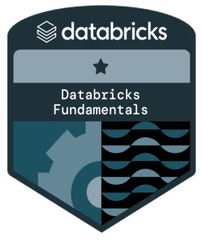
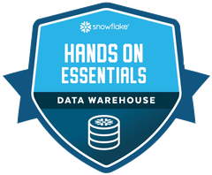

01 / PYTHON · XGBOOST
Predicting Hospitalization Intensity
Built a three-class hospitalization risk model on 50K+ U.S. adults, and caught a data leak that was inflating performance.
Data analyst with a Master's in Analytics (Applied Machine Intelligence) from Northeastern University and nearly two years of professional experience turning messy data into decisions.
I work across the full analytics stack: SQL, Python, and R for analysis and modeling, and Tableau and Power BI for bringing results to stakeholders. My focus is customer analytics and experimentation: segmentation, forecasting, and A/B testing that drive real business outcomes.
I care most about analysis that's rigorous, defensible, and actually used.
Real academic and professional work: analysis, models, and the code behind them. Every project links to its repository.
Built a three-class hospitalization risk model on 50K+ U.S. adults, and caught a data leak that was inflating performance.
A churn pipeline on real Last.fm data: behavioral churn labels, a leakage-safe model (AUC 0.82), and expected-value targeting, with a designed experiment to test it.
An AI travel planner built for 2026 World Cup fans, creating match-day itineraries.
City Worker App requests were resolved 284 hours faster than consumer-facing channels.
Verified certifications across visualization, cloud data platforms, and analytics.


Open to data and product analyst roles. I’d love to hear from you.